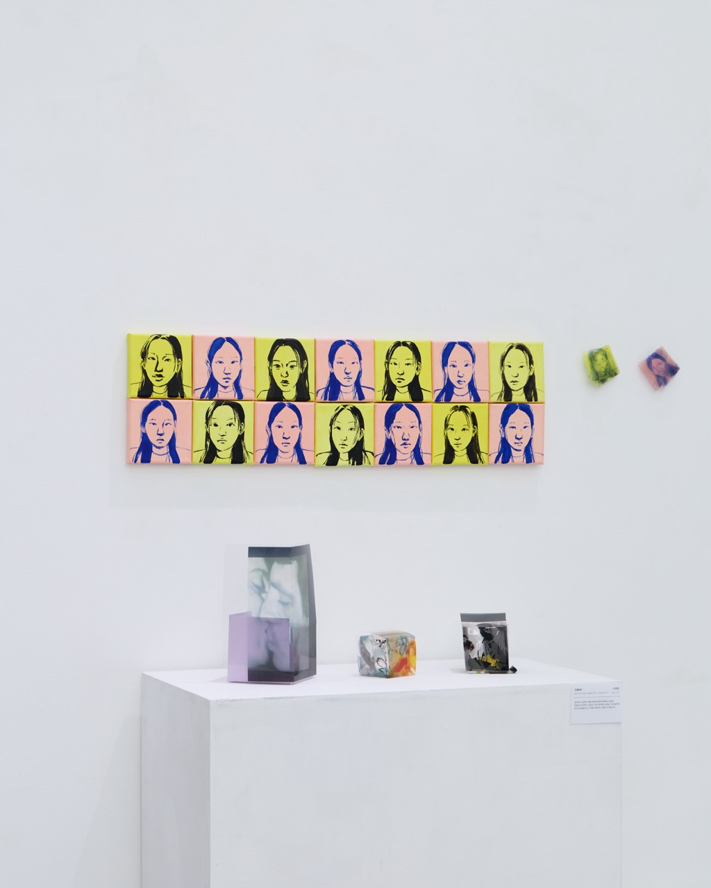
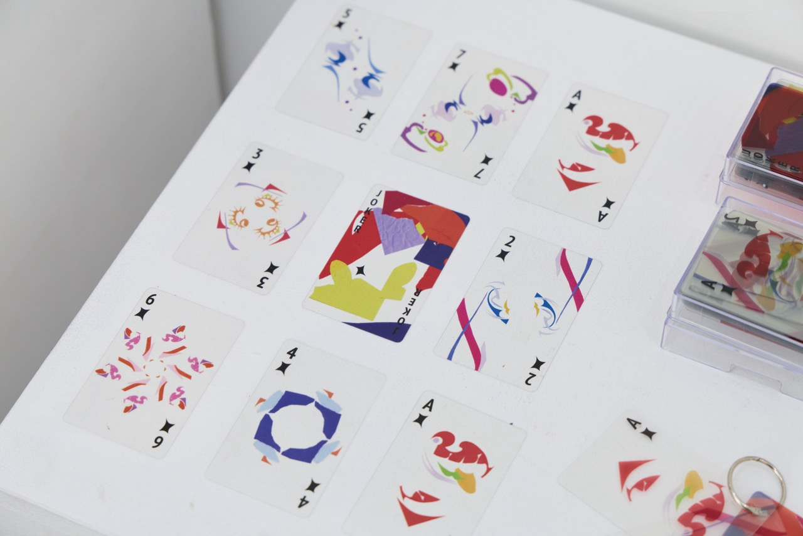

Joker
그림: 71.5 x 20cm/ 전개도: 7x7x7cm(2) 14x14x17cm(1)/ 굿즈 : A4 2장 디피, 캔버스에 아크릴, ohp필름과 종이, 고투명 pet 카드
이정현
'광대'라는 표현이 보통 부정적으로만 비춰져서 새로운 관점으로 보여주고 싶었다. 내가 생각하는 광대는 가장 솔직한 자신의 모습을 있는 그대로 보여주는 존재이기 때문이다.